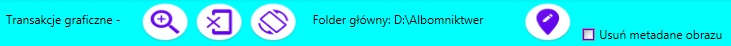

Program "Komentarze do zdjęcia" ma na celu zapisywanie metadanych w obrazie. Plik zawierający metadane musi mieć format: jpg, jpeg, bmp, gif, png, tif. Plik może zawierać kilka metadanych, które muszą należeć do różnych użytkowników. Metadane zawierają ścieżkę, w której plik zostanie umieszczony dla wybranego użytkownika.
Program ma następujące tryby działania:
certyfikat o programie;
tryb wybierania i przenoszenia plików według metadanych;
wstawianie, zapisywanie i usuwanie z wybranego pliku metadanych. Aby przejść do tego trybu, należy wybrać obraz i kliknąć dwukrotnie myszą lub wybrać polecenie menu kontekstowego "Zmień lokalizację (metadane)".
1. Menu Mode - wybierz i przenieś pliki
Polecenia menu (od lewej do prawej):
- informacje o autorze;
- wybierz folder zawierający obraz;
- Skala wyświetlania miniaturowego obrazu;
- przenoszenie obrazu zgodnie z metadanymi;
( przenoszenie wybranego obrazu odbywa się za pomocą polecenia menu kontekstowego)
- Tryb "Program pomocy".
Menu trybu - wstawianie, zapisywanie i usuwanie metadanych

Polecenia menu (od lewej do prawej):
- zwiększyć obraz (skala 200%);
- wyświetlanie oryginalnego obrazu;
- Obróć obraz w prawo;
- zapisywanie metadanych do obrazu;
- usuń metadane na obrazie.